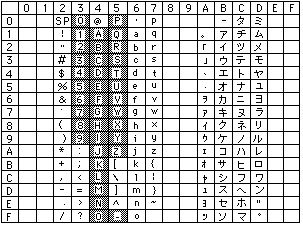
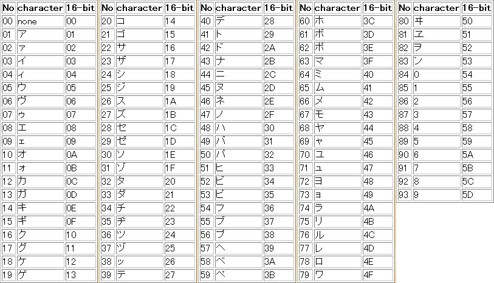
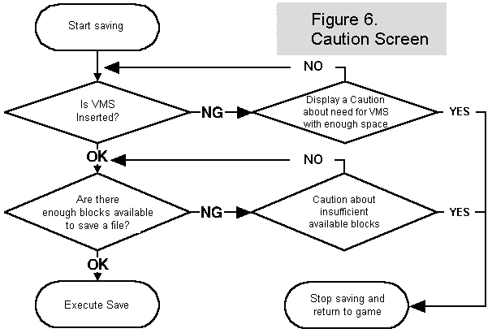
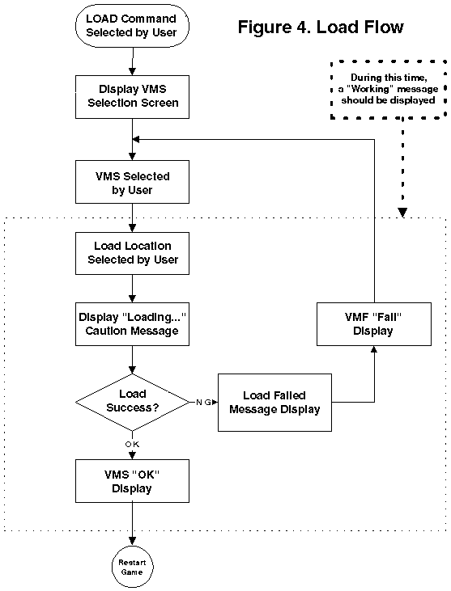
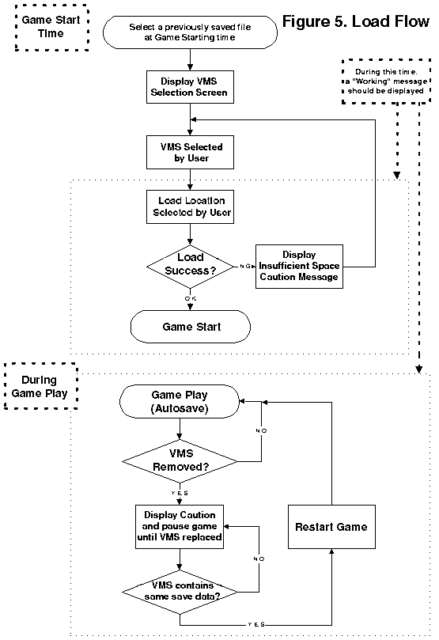

Dreamcast Software Development Standards/Ver. 2.00EU
Required: The save file for a Dreamcast application must always be registered to the 3rd Party Licensing Department.
Create a file name that is easily recognisable with the game name.
15.1.1 Save File Name
In the Boot ROM file menu, the first 9 characters determine files associated with each game, so if these characters are not the same, the files are not recognised as belonging to the same game, and the batch copy function will not work.
If saves are possible at various stages, the last 3 characters of the file names should be sequentially numbered, and other files (key configuration data, additional game options, etc.) should have the last 3 characters alphabetic.
Recommended:
The backup library handles file names as case-sensitive: lower-case characters are disallowed.
Standardised:
Game Option File DRAGOON3.SYS
Typical Game Save File DRAGOON3.001
DRAGOON3.002
DRAGOON3.003
The number of files that may be created is no longer limited.
15.1.2 VM Comments
Although the Boot ROM comments described in 15.1.3 are displayed in the File Control Menu, only the file names and VM Comments are displayed in the VM file mode, so the VM Comments should contain descriptions of the files.
Table: Usable characters for file names and VM Comments

* Characters in the grey scale area represent those that can be used for the name of the file to be saved.
5 Menbos (Game screen indication)
Zoano Machi (Name of saved game)
Time Attach (Game mode name)
Sonachine (Player name), etc.
Display of "Game name + game status" is also possible.
- Example: Grand Edo Sumo Spirit Prohibited Moves! Flaming harite!
- Game name: Threatening! Grand Edo Sumo Spirit
- Game status: Prohibited Moves! Flaming harite!! Chapter
Example: "DreamPassport01", "DreamPassport02"
Be especially careful when creating a sequel to avoid confusing sort data with the previous application.Note:
Example: "DreamPassport01/2", "DreamPassport02/2"
Supplemental material: Table of characters for sorting  * When the sort value is not set, use 00. When you want to use a space, use 00. The Sort Check Tool is included in the Visual Memory SDK.
15.1.5 Save File Icon
The unique icon allows each applications' save files to be recognised in the Boot ROM File Control Menu.
A Visual Comment in the 32k colour mode would occupy about 16 blocks, requiring extra time to save and load. As the image size is small, there is little advantage to the 32k colour mode, so it is better to save the users' time.
 Recommended: When dealing with multiple files and the file size is
unstable, execute saves for each individual size, not the maximum size. (with specs
for saving mail files individually.)
Recommended: When dealing with multiple files and the file size is
unstable, execute saves for each individual size, not the maximum size. (with specs
for saving mail files individually.)
 Required: In cases other than the exception above, secure the maximum size
(maximum block) to use in the software for the file size (block for saving).
Required: In cases other than the exception above, secure the maximum size
(maximum block) to use in the software for the file size (block for saving).
For a save file that is considered to have variable length data up to stage 1 using 2 blocks, and at the final stage using 6 blocks, create a file of 6 blocks (the maximum size) beforehand, and avoid storing empty space (empty blocks) when overwriting in the midst of the file.
If an application is to save its progress during use (or if the size change is extreme) such as the special case of "Dezaemon," please contact the person in charge at Sega beforehand.
 15.1.8 VM
Volume Icon
15.1.8 VM
Volume Icon
Development Standards for Ver.1.xxE asked for confirmation when saving the Visual Memory volume, but from Ver.2.00E, it is okay to save without checking first.
15.1.9 Other Data to Save
There are no requirements or recommendations for the following 2 files.
(Place 0GDTEX.PVR in the root directory of the GD area)- CD Label Data
(information about Visual Memory colour can be stored)- Visual memory screen display colour data
Refer to the list of A, B, or C for each application and jump to the appropriate
choice. 15.2 Memory Card (Visual Memory) Selection
15.2 Memory Card (Visual Memory) Selection
A: The application has a memory card selection
screen at save (load) time, and multiple memory cards inserted in expansion sockets are
supported (Go to 15.2.1).
B: Once a memory card inserted in a specific expansion socket has been selected in an
application that can't be revised due to auto save (e.g., "Trail of Wonder",
"Wizardry" and "Monster Farm"), that specific memory card is used (throughout
the game) (Go to 15.2.2).
C: Only the memory card inserted in a specific expansion socket in a specified port can
be used for save data such as HI SCORE or key configuration, or no memory card selection
screen is included (Go to 15.2.3).
In this case, the user selects the memory card at each save. 15.2.1 Applications that have a memory card selection screen when saving
(and loading), and support multiple memory cards inserted in expansion sockets (Fig. 2)
15.2.1 Applications that have a memory card selection screen when saving
(and loading), and support multiple memory cards inserted in expansion sockets (Fig. 2)

* The memory management screen is the screen
in the application that has the Main Unit Boot ROM file management menu functions.
: Memory Card Selection Screen
Screen status
However, access to Visual Memory cannot be done when using the gun controller. For that reason, this rule does not apply, but include it anyway so as not to confuse the user.
Particularly in controllers planned for the future, keyboards will not be provided with an expansion socket. So if a keyboard is used, it should be possible to save to a memory card inserted at another port or on another controller. At that time, saving should be possible even if an unused or incompatible controller is connected.Note:
In this case, the memory card for the save file is selected when starting the game, and
the save file is overwritten during the game. 15.2.2 With an application that performs autosave (e.g., "Trail of
Wonder" and "Wizardry") that can't be revised, once a memory card inserted
in a specific expansion socket has been selected, that specific memory card is used
(throughout the whole game) (Fig. 3)
15.2.2 With an application that performs autosave (e.g., "Trail of
Wonder" and "Wizardry") that can't be revised, once a memory card inserted
in a specific expansion socket has been selected, that specific memory card is used
(throughout the whole game) (Fig. 3)
Note: Previously, a pause and warning display were required at the time a memory card was removed, but with this version, save is carried out if revisions are made to the memory card and it is reinserted.
 15.2.3 Only the memory card inserted in a specific expansion socket is used in
a specific port for save data such as HI SCORE and key configuration and the memory card
selection screen is not included
15.2.3 Only the memory card inserted in a specific expansion socket is used in
a specific port for save data such as HI SCORE and key configuration and the memory card
selection screen is not included
In this case, when high score or key configuration
data is changed, the application can freely write to the memory card.
In this version, control is relaxed, so the application side can decide the "specific expansion socket in the specific port".
However, it is necessary to clearly indicate to the user the messages, "Save to the memory card inserted in the expansion socket in the port?" and "What expansion socket in which port should I insert the memory card in?"
However, access to Visual Memory is not possible when using the gun controller. For that reason, this rule does not apply, but include it anyway so as not to confuse the user.
15.3 Memory Card (Visual Memory) Initialisation
Currently, all visual memories are shipped in the fully initialised state. If reinitialisation is needed, it should be done from the File Control Menu of the Boot ROM.
It can be assumed that data may be lost if power is turned off or a reset performed while saving, so the caution message is important.
Also, even when using auto save, display a message on the TV screen such as "Executing save. Do not turn off the power" as a warning when save time lasts for more than one second.
Required: Soft reset capability must be disabled while a save is executing.
Required: When a save operation fails to complete correctly, a caution message such as "Save could not complete correctly" should be displayed.
Required: Except when using auto save, display a warning such as "A file with the same name already exists. OK to overwrite? (YES/NO)" to make overwrite selectable for the user when the user selects save to overwrite a file with the same name.
Required: Before overwriting a VM Special Game file during application execution, a caution message such as "A VM Special Game is installed. If overwritten, it cannot be played any more. Is it okay to overwrite? (YES/NO)" and allow the user to choose.
No particular message display is needed during 15.2.2 Autosave or when 15.2.3 High scores, etc. are saved.
15.4.1 Saving When Activating Autosave
An actual case with other application resulted in settings being lost when it was started without a memory card. If a memory card was then inserted, the key configuration was not refreshed, so the previously saved settings overwrote the current settings.
When a memory card is not inserted, or the memory card lacks the required amount of
save space, display a warning indicating the difficulty in proceeding with the game
directly before executing save. (Fig. 6 shows reference examples.) 15.5 Caution
Messages
15.5 Caution
Messages

The rules for each case are as follows:
Check all installed memory cards to determine if any memory card has enough space (blocks).
When a warning message is displayed once, it is not necessary to display the message again unless power to the main unit is turned off, except in cases when the memory card is inserted as mentioned above.
 15.6 Memory
Control Screen
15.6 Memory
Control Screen
By not providing a command to erase all files, the problem of the user accidentally using it during memory control is avoided.
 15.7 Loading
Saved Files
15.7 Loading
Saved Files
Display can be done before loading.
15.2.1 and 15.2.2 are shown in Figs. 4 and 5, respectively.The flow processes of file loading described in


Downloading files with copy prohibited attributes is under separate regulation.
Do not use files with copy prohibited flags when it is not especially necessary to download them according to the above-written regulation. The application development side must judge if copying copy prohibited attributes is justified in cases such as those shown below.
- When adjusting the difficulty and backup is prohibited by adding copy prohibited attributes in an application with autosave.
- When the same material is not yet being sold in a Visual Memory stand-alone application.
15.9 VM (Visual Memory) Displays
Note: Depending on the type of controller and expansion socket, whether a Visual Memory card should be inserted facing towards or away from the user should be indicated on the display as described in 26. VM (Visual Memory) Illustration.
15.10 Handling Long Save Times
Currently, compared with Saturn, Dreamcast requires a relatively long time to access a memory card during saves (about 16 seconds for 200 blocks).
After a save command is issued (but before the save is completed), normal processing is possible.
Based on the above conditions, when a long time is needed for saving, observe the following recommendations.
Recommended: Applications that create large save files with RPG or simulations can return to normal game processing without waiting for saves to finish.
15.1 to 15.9 and the following standard 15.10.1.If an application needs to save RAM that changes according to game progress, copy the RAM area to a separate area in RAM and then save the copy. While saving, resume normal processing, but with care to avoid changing the contents of the RAM being saved.
When following the above recommendations, to avoid the situation where the user turns the power off or performs a soft reset due to confusion during a long save, please observe creation standards
15.10.1 Display of Return to Normal Processing
Soft reset and CD door open conditions should be indicated in a manner that is compatible with the normal save indication.
15.11 Visual Memory Single Application Files
In actual application, it has been a while since memory cards without an LCD were sold, but determining whether or not a Visual Memory has an LCD should be made possible.


Copyright SEGA ENTERPRISES, LTD., 1998,1999 and Sega Europe 1999